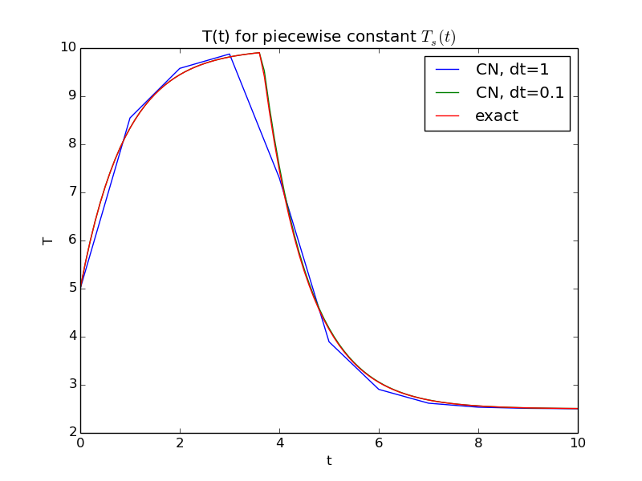
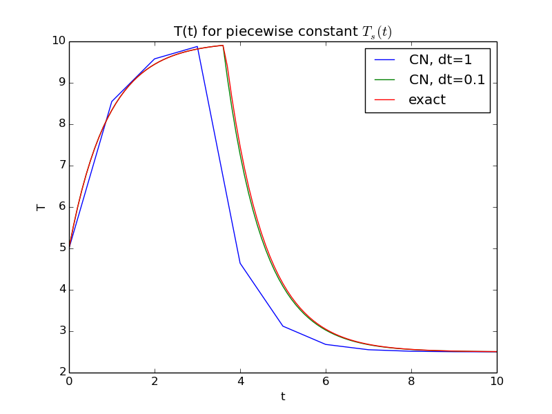
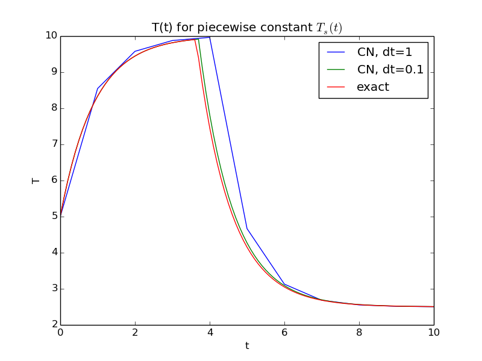
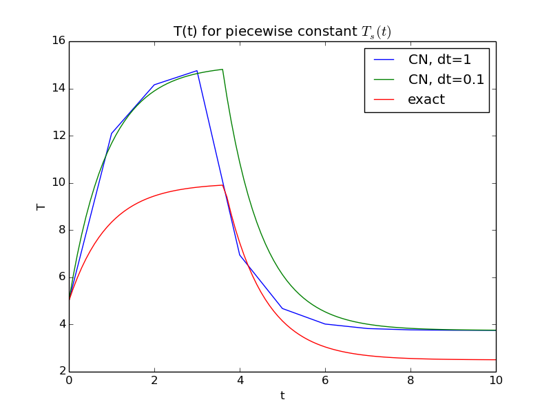
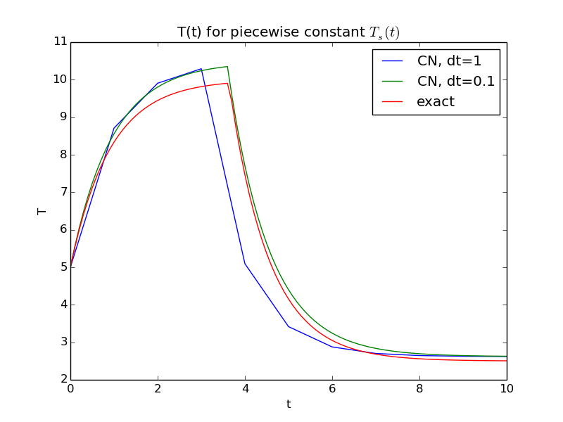

cooling function
def cooling(T0, k, T_s, t_end, dt, theta=0.5):
"""
Solve u`=-a(t)*u + b(t), u(0)=I,
for t in (0,T] with steps of dt.
a and b are Python functions of t.
"""
dt = float(dt) # avoid integer division
Nt = int(round(t_end/dt)) # no of time intervals
t_end = Nt*dt # adjust to fit time step dt
u = np.zeros(Nt+1) # array of u[n] values
t = np.linspace(0, t_end, Nt+1) # time mesh
u[0] = T0 # set initial condition
for n in range(0, Nt): # n=0,1,...,Nt-1
u[n+1] = ((1 - dt*(1 - theta)*k)*u[n] + \
dt*k*(theta*T_s(t[n+1]) + (1 - theta)*T_s(t[n])))/ \
(1 + dt*theta*k)
return u, t
The figure below shows that the numerical and exact solution are visually identical for the parameter set \( T_0=5 \), \( k=1.1 \), \( \theta =\frac{1}{2} \), \( T_s \) equal to \( C_0 \) for \( t < t^* \) and \( C_1 \) otherwise, and \( \Delta t=0.1 \).

cooling)
and still get a plot where the numerical and exact solution
are on top of each other?
That is, could such a convincing plot actually correspond to
a buggy program?
T_s n+1 in the last t term,
dt*k*(theta*T_s(t[n+1]) + (1 - theta)*T_s(t[n+1])))/
instead of the correct index n:
dt*k*(theta*T_s(t[n+1]) + (1 - theta)*T_s(t[n])))/
The effect of wrong time value in the source term of the ODE is slightly more visible than in the correct plot, but lowering \( \Delta t \) makes the curve lie on top of each other.
Figure 1: Bug in time evaluation of \( T_s \).

Making a corresponding error in the other term, i.e.,
dt*k*(theta*T_s(t[n]) + (1 - theta)*T_s(t[n])))/
instead of the correct index n+1:
dt*k*(theta*T_s(t[n+1]) + (1 - theta)*T_s(t[n])))/
leads to very close curves as well:
Figure 2: Bug in time evaluation of \( T_s \).

theta in a term theta term (1 - theta):
dt*k*(theta*T_s(t[n+1]) + *T_s(t[n+1])))/
The correct line is
dt*k*(theta*T_s(t[n+1]) + (1 - theta)*T_s(t[n+1])))/
This bug is very visible for \( \theta=\frac{1}{2} \) (but of course not visible for the Backward Euler scheme where that term is zero anyway):
Figure 3: Bug due to missing theta term.

k in the updating formula k from the correct line
u[n+1] = ((1 - dt*(1 - theta)*k)*u[n] +
and use instead
u[n+1] = ((1 - dt*(1 - theta))*u[n] +
This error gives a visible effect. It is still quite small since \( k=1.1 \) and this is close to 1, the effective factor in the buggy code. For smaller or larger \( k \) the numerical solution deviates significantly from the exact one.
Figure 4: Bug due to missing k factor.

1 - theta instead of theta 1 - theta in a term where it should be theta, i.e.,
dt*k*((1-theta)*T_s(t[n+1]) + (1 - theta)*T_s(t[n])))/
instead of
dt*k*(theta*T_s(t[n+1]) + (1 - theta)*T_s(t[n])))/
With the Crank-Nicolson scheme and \( \theta = \frac{1}{2} \), this has no effect and we get the right plot. However, any attempt at \( \theta=0 \) or \( \theta=1 \) gives widely different curves and points to an error.